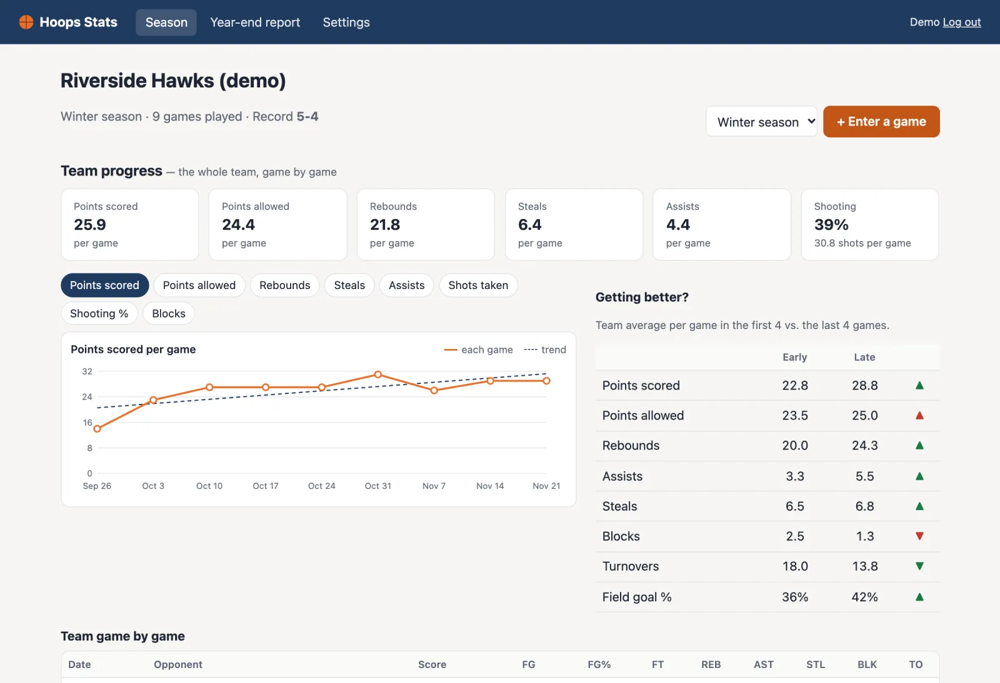
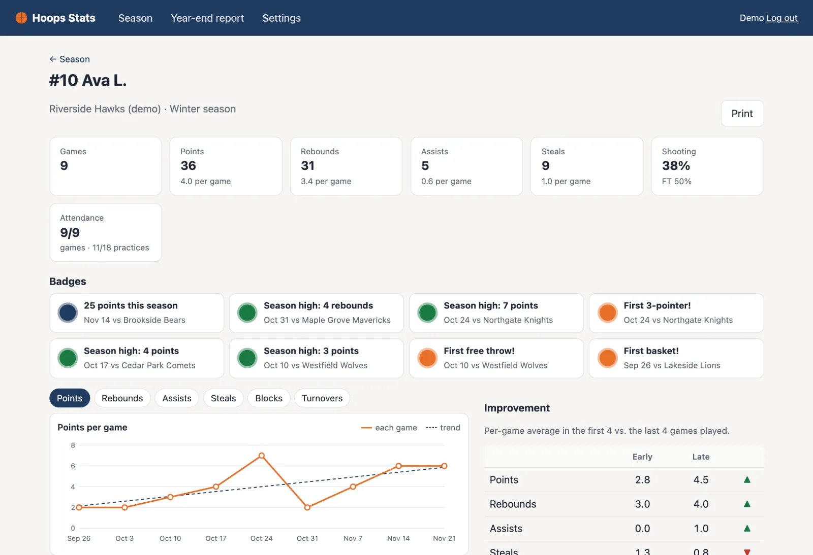
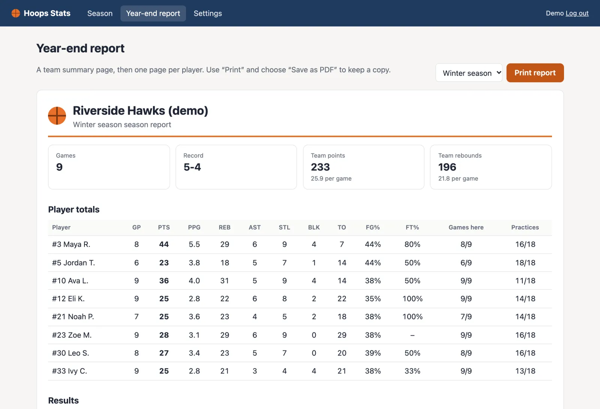
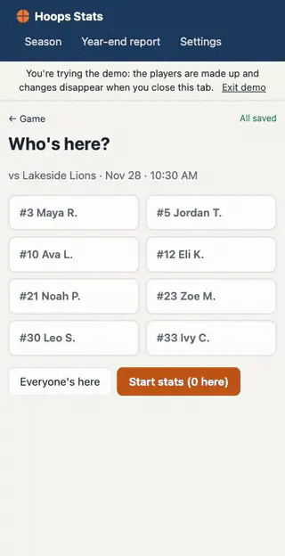

Hoops Stats
Stats for a youth basketball team. They're entered live on a phone at the gym, even with no signal, or read from a photo of the paper stat sheet. Every player gets a page showing how they're improving, and families get a printable year-end report.
The Problem
Youth basketball stats live on a paper sheet. A volunteer tallies shots and rebounds at the scorer's table, and when the game ends the sheet goes in a bag and nobody sees it again. The coach can't tell who's improving, and families never see their kid's progress. Any fix had to be free to run, quick for a volunteer to use mid-game, work in a gym with bad signal, and keep each family's view limited to their own child.
Screenshots



Live Entry at the Gym

The scorekeeper marks who showed up, picks a player and taps Made, Missed, Rebound or Steal. The score adds itself up, and Undo fixes a mis-tap.
Every tap is saved on the phone first and sent to the server once there's a connection, so a dead spot in the gym never loses a stat. The status in the corner always shows whether everything is saved.
Each button also tells a screen reader which player it's for, and every tap is read out as it's logged.
The Approach
Reading the paper sheet. Some games will always be scored on paper, so the coach can take a photo of the filled-in sheet. The photo is shrunk on the phone, then sent to the Claude vision API with the team's roster and a strict JSON schema. The model returns each player's numbers plus a list of the boxes it wasn't sure about. Those boxes are highlighted for the coach to check, and the app warns if the players' points don't add up to the final score.
Privacy enforced in the database. There are three kinds of login: coaches who can edit, helpers who can only view, and parents. A parent's limit is applied inside every SQL query, not hidden by the page, so their browser never even receives another child's stats. When the roster is copied into a new season, parents stay linked to their child automatically.
Small on purpose. There's no framework and no build step: one JavaScript file, one stylesheet and a single Node API running as a Vercel function on Neon Postgres. Locally and in the tests, the same SQL runs on PGlite, an embedded Postgres, so setting it up is just npm install. The charts, including the trend lines, are hand-drawn SVG with no chart library.
A demo that can't leak anything. The public demo runs a made-up team entirely in the browser. It never calls the server, so visitors can click everything, including live entry, without seeing real kids' data or running up the AI bill.
Tested and accessible. 16 tests use Node's built-in runner and run on GitHub Actions on every push. The API tests run the real SQL on a throwaway database, checking login blocking, view-only limits and that a parent can never load another child's data. The stat tests cover points, percentages, badges, attendance and the early vs. late season comparison. The color palette meets WCAG AA contrast, with a separate darker orange for text and buttons.
What Was Hard
Designing for the people actually in the gym. A volunteer parent is scoring a fast elementary-school game, holding a phone with one bar of signal. That meant big tap targets, a running score they can check against the scoreboard, Undo instead of confirmation pop-ups, and saving to the phone first so nothing depends on the network. Scanning the paper sheet had a similar lesson: the AI is useful because it's honest about the boxes it can't read, and the coach stays in charge of the final numbers.
The Outcome
One app now covers the whole season: entering stats live or from a photo, schedule and practice attendance, a progress page for every player, family logins limited to their own child, and a year-end report with a page per player. It's live on Vercel, and anyone can try the full app on a made-up team through the public demo.
What's Next
A "forgot password" route so families don't need the coach to reset their login, a dark mode built on the existing color palette, and support for more than one team per account so a whole league could use it.